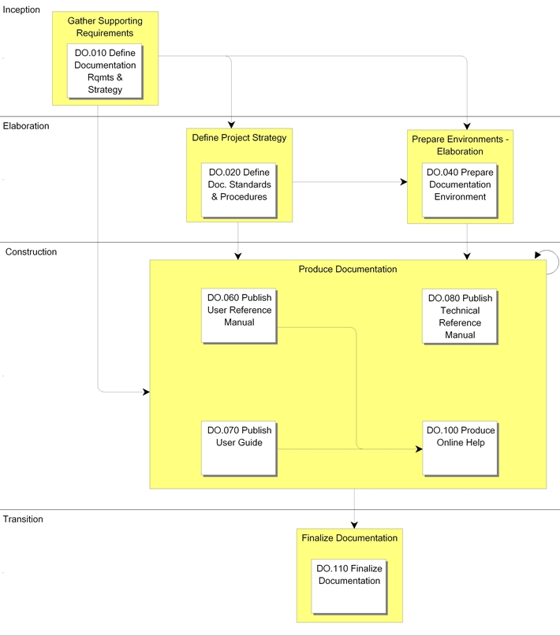

OUM |
Process Overview |
||
Method Navigation |
Current Page Navigation |
||
|
|
||||||||
Quality documentation is a key factor in the transition to production, gaining user acceptance, and maintaining the ongoing business process. The requirements and strategy for this process vary based upon project scope, technology, and requirements.
For projects that include Oracle Application products, the Oracle Application manuals are the foundation of implementation documentation. The Documentation process will develop documentation to augment the standard Oracle Application products manuals with specific information about the organization's custom software extensions and specific business procedures.
 This process overview is written from the perspective of a Full Method View, utilizing ALL of the activities and tasks in this process. Therefore, all of the following sections provide comprehensive information. If your project is utilizing a tailored approach (for example, Technology Full Lifecycle View, Application Implementation View, Middleware Architecture View), not everything in this overview may be appropriate for your project. Please keep this in mind, especially when reviewing the Key Work Products and Tasks and Work Products sections. You should use OUM as a guideline for performing all types of information technology projects, but keep in mind that every project is different and that you need to adjust project activities according to each situation. Do not hesitate to add, remove, or rearrange tasks, but be sure to reflect these changes in your estimates and risk management planning. You should also consider the depth to which you address and complete each task based on the characteristics of your particular project or project increment. See Oracle's Full Lifecycle Method for Deploying Oracle-Based Business Solutions for further information on the scalability and adaptability of OUM.
This process overview is written from the perspective of a Full Method View, utilizing ALL of the activities and tasks in this process. Therefore, all of the following sections provide comprehensive information. If your project is utilizing a tailored approach (for example, Technology Full Lifecycle View, Application Implementation View, Middleware Architecture View), not everything in this overview may be appropriate for your project. Please keep this in mind, especially when reviewing the Key Work Products and Tasks and Work Products sections. You should use OUM as a guideline for performing all types of information technology projects, but keep in mind that every project is different and that you need to adjust project activities according to each situation. Do not hesitate to add, remove, or rearrange tasks, but be sure to reflect these changes in your estimates and risk management planning. You should also consider the depth to which you address and complete each task based on the characteristics of your particular project or project increment. See Oracle's Full Lifecycle Method for Deploying Oracle-Based Business Solutions for further information on the scalability and adaptability of OUM.
This process flow for this process follows:

Successful project documentation reflects the final applications system as it is approved for use. It is accurate, concise, and uses diagrams and charts to explain broad or complex concepts. It should be useful to both beginners and experienced users of the system and have a user-friendly tone that is neither too academic nor too technical.
During the Inception Phase, a Documentation Requirements and Strategy (DO.010) is developed to drive this process. From that strategy, Documentation Standards and Procedures (DO.020) are developed to guide the documentation work products to be produced.
If you have a writing standards guide, follow it when writing any custom documentation. You can use other appropriate style guides as well.
After you complete the Documentation Requirements and Strategy (DO.010) and define the Documentation Standards and Procedures (DO.020), create a prototype of each document. A prototype consists of a table of contents and a sample chapter. The first purpose for prototyping is to tangibly display your understanding of documentation requirements, standards, and procedures in terms of form and content. The second purpose is to set user expectations. Showing a tangible prototype is far more effective than discussing documentation.
The project team should begin Documentation tasks whenever the appropriate prototype and the required documentation inputs have been approved. Several required documents may be worked on simultaneously.
The documentation writers should build on the documents that have been completed during earlier implementation tasks. Earlier documents can be used as is, or portions can be incorporated as required.
The following sections can be included in both user and technical documentation.
Generally, a table of contents is necessary for all documents that are over several pages and cover a variety of subtopics. If a user does not need to read the entire document from start to finish each time it is referenced, add subtopic headings and create a table of contents.
If the customization or subject area includes multiple forms, reports, or programs, consider beginning with an overview of the process explaining how the individual pieces relate to each other.
If detailed charts, diagrams, and examples are confusing or cause a loss of continuity in the text, put them in an appendix where they can be referenced.
Include any unfamiliar or confusing terms in the glossary. For example, the term FOB may not be familiar to all users, or the term demand may have a different meaning for each audience. Including these terms in the glossary removes doubt about their meaning.
The Glossary (RD.042) is a good source of terms that should be included in your Glossary. You may want to incorporate the Glossary (RD.042), in part or total, in some or all of the Documentation work products.
If the documentation is more than a few pages, an index helps the user locate key topics or words.
Documentation may be published in a number of electronic and published media.
The documentation may be produced on printed pages. This has been the standard media in the past for publishing documentation. Some organizations may choose to go paperless—if they do, they may not allow any documents to be published in printed form.
The OUM documentation work product templates are based upon Microsoft Word. From the Microsoft Word documents, documentation work products may be produced as a portable electronic document using a format such as Adobe’s Portable Document Format (pdf). These portable documents may be exchanged among users and read on a variety of computing environments using Adobe’s Acrobat Reader. The key benefit to this approach is that a single publication activity yields a multitude of platforms in which the documents may be read.
The documentation can be published on a web page and can be accessed via a web browser and an URL address.
Users should review documentation along with early test results for programs, reports, enhancements, and new forms.
If it is to be a valuable resource, Documentation must accurately reflect the system. During Testing (TE), applicable documentation should be referenced by the testers, as it would be in production. If the documentation is unclear or outdated, appropriate changes must be made. Testing is not complete until the documentation is verified as correctly reflecting the new system.
The tasks and work products for this process are as follows:
| ID | Task | Work Product |
|---|---|---|
Inception Phase |
||
DO.010 |
Define Documentation Requirements and Strategy | Documentation Requirements and Strategy |
Elaboration Phase |
||
DO.020 |
Define Documentation Standards and Procedures | Documentation Standards and Procedures |
DO.040 |
Prepare Documentation Environment | Documentation Environment |
Construction Phase |
||
DO.060 |
Publish User Reference Manual | User Reference Manual |
DO.070 |
Publish User Guide | User Guide |
DO.080 |
Publish Technical Reference Material | Technical Reference Material |
DO.100 |
Produce Online Help | Online Help |
Transition Phase |
||
DO.110 |
Finalize Documentation | Final Documentation Work Products |
The objectives of the Documentation process are:
Refer to Key Work Products for a complete list of key work products in OUM.
The following roles are required to perform the tasks within this process:
| Role ID | Name | Responsibility |
|---|---|---|
Implementing Organization |
||
| BA | Business Analyst | Describe documentation needs and current documentation usage. Agree on documentation standards. Assist with content for the User Reference Manual and User Guide. |
| DV | Developer | Provide assistance in verifying the documentation is correct and complete. Provide material for the Technical Reference Material (DO.080). Provide assistance generating Online Help from the User Guide (DO.070) and the User Reference Manual (DO.060). Provide any final updates or changes for Documentation work products. |
| SAD | System Administrator | Procure, install and test the Documentation Environment. |
| SA | System Architect | Provide assistance in verifying the documentation is correct and complete. Provide material for the Technical Reference Material (DO.080). Provide any final updates or changes for Documentation work products. |
| TW | Technical Writer | Write, edit, and review the various work products. Obtain agreement with users on the work products. Write, edit, and review the accompanying documentation for the Documentation Environment. Write, edit, and review the User Reference Manual. Design, gather material, organize, write, edit, and review the User Guide. Revise sections of the User Guide (DO.070) based on system test scenarios. Gather, organize, edit, and review the Technical Reference Material. Generate or develop the Online Help from the User Guide (DO.070) and the User Reference Manual (DO.060). Update Documentation work products with any final updates or changes. |
| TE | Tester | Write, edit, and review the Documentation Requirements and Strategy when offshore input is utilized. |
Customer (User) |
||
| KEY | Ambassador User | Review the Online Help and provide feedback. |
| BLM | Business Line Manager | Assist in describing documentation needs and current documentation usage. Agree on documentation standards. |
| CPM | Customer Project Member | Provide input into developing the work product. Review the Online Help and provide feedback. |
| CSM | Customer Staff Member | Install the Documentation Environment and assist in testing. |
This section is not yet available.

Copyright © 2006, 2016, Oracle and/or its affiliates. All rights reserved.